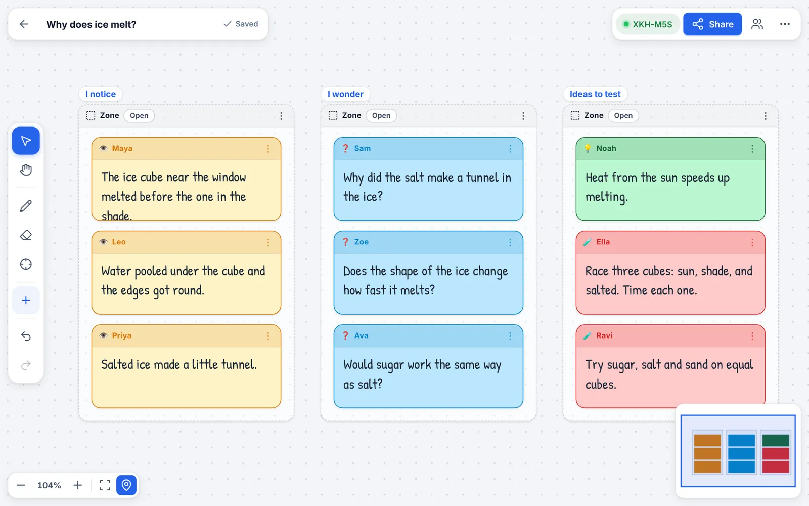
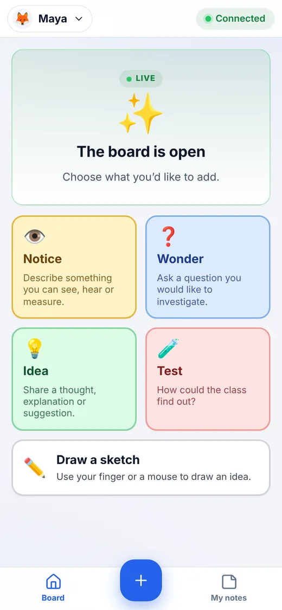
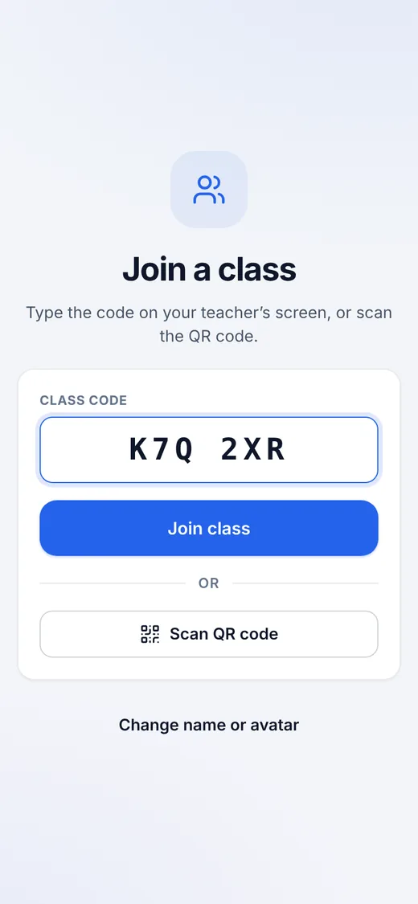
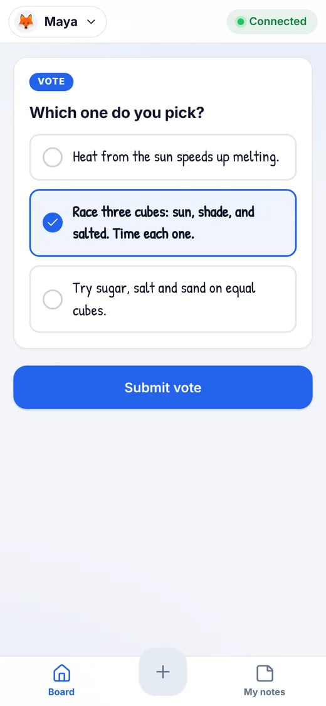

Open a board and share the code
Start blank or from a template like See-Think-Wonder. A short code and QR code appear for your class.
Class code
K7Q-2XR
Students join with a class code and share notices, wonders and ideas from any device. You sort, vote and build understanding together on an infinite canvas, all running right in the browser.


No setup, no rosters, no student logins.
Start blank or from a template like See-Think-Wonder. A short code and QR code appear for your class.
They type the code or scan the QR on a phone, tablet or Chromebook. Pick an avatar and a first name, and they’re in.

Notes appear live. Group them into zones, then launch a vote, a ranking or a discussion and see results instantly.

Built around notice, wonder and argue, and designed to work as well on a phone as on a projector.
Colour-coded Notice, Wonder, Idea and Test notes, plus quick sketches students draw with a finger or mouse.
Group notes into zones, or open a Claim · Evidence · Reasoning builder so students construct arguments together.
Ask a question or collect numbers from the class and watch the chart build in real time.
Turn any set of notes into a vote, a ranking or a focused discussion with feedback, questions and connections.
Short answer, rating, multiple choice, multi-select, or “I learned / I wonder”. Responses land on your board.
Build one model together on a shared canvas. Students follow your view and can be invited to draw.
Give a group its own private board, then bring their thinking back to the whole class.
Approve notes before they appear, pause a student, hide names, run a timer or invite a co-host on a second device.
Boards are saved on your device. Export as a file, a picture or a printable outline, and add it to your home screen like an app.
There’s no InquiryDQB server or database, so there’s nothing to sign up for and nothing to leak.
No emails, passwords or analytics. Students choose a first name or nickname that only their teacher sees.
Notes travel from each student’s device to the teacher’s over encrypted WebRTC connections. Nothing is stored along the way.
Boards live in your browser’s own storage and students keep their notes on their device. Export or delete them whenever you like.
One honest detail: to introduce devices to each other, InquiryDQB uses free public services by default: the PeerJS connection service and a Google STUN server see technical details such as IP addresses and the random class code, and if a direct link is impossible, encrypted traffic can be relayed through PeerJS’s TURN servers. None of them can read notes, names or boards. Schools can run their own; see Hosting InquiryDQB yourself.
A laptop, Chromebook or tablet with a current Chrome, Edge, Safari or Firefox. Keep the board tab open during the lesson.
Any phone, tablet or computer with a modern browser. Students can scan the QR code or just type the class code.
Everyone needs internet access, and peer-to-peer (WebRTC) traffic can’t be blocked by the school filter. Most networks are fine.
Open a board, share the code and watch your students’ questions appear.
Start a board